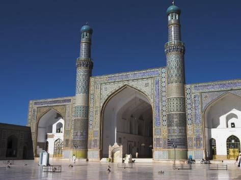
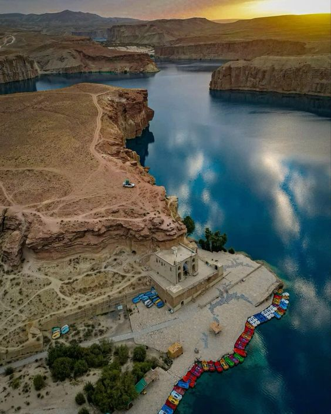
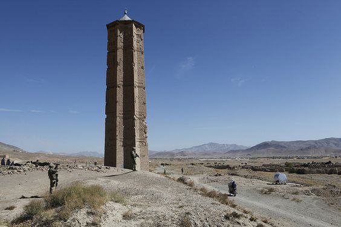
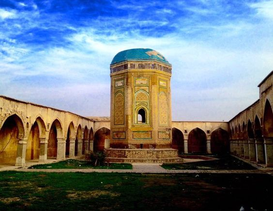

Top 5 Tourist Attractions in Afghanistan

Kabul
Babur Garden and Darul Aman Palace are key attractions in the capital city.

Herat
Herat Grand Mosque and Ikhtiyaruddin Citadel are historic gems.

Bamyan
Buddha statues and Band-e Amir lakes offer spiritual and natural beauty.

Ghazni
Famous for its ancient minarets and Ghaznavid-era heritage.

Kandahar
Home to the Sacred Cloak Mosque and old city walls.